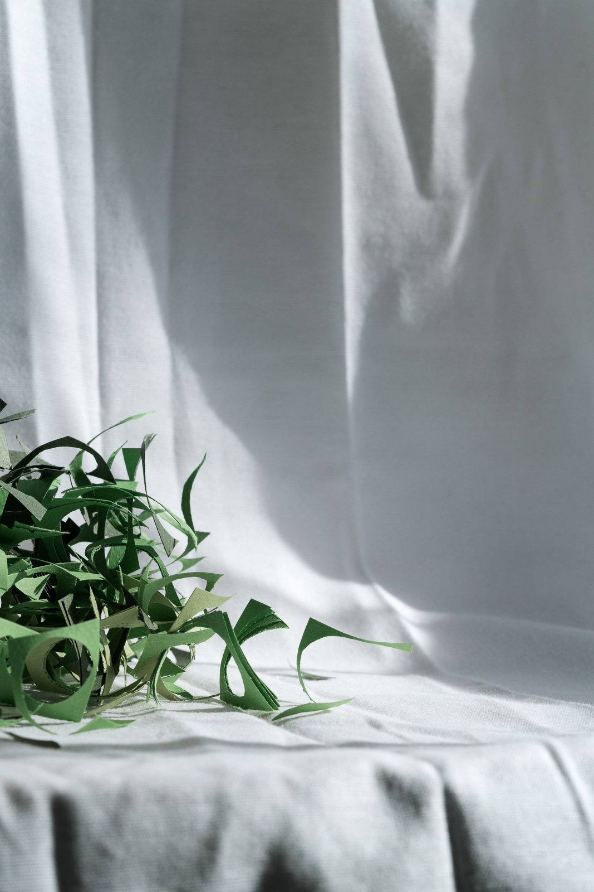
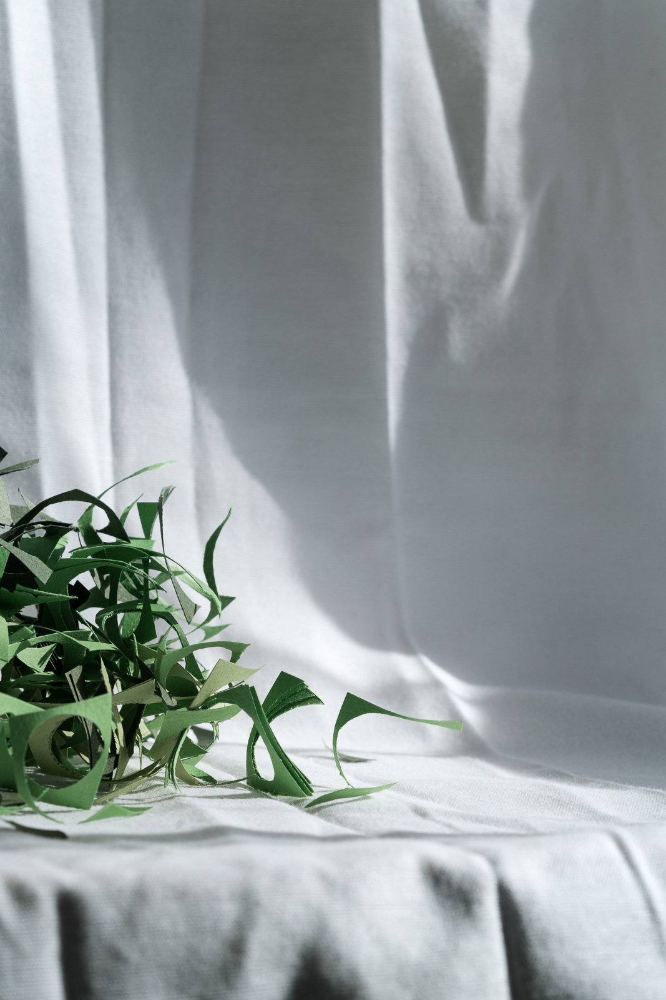
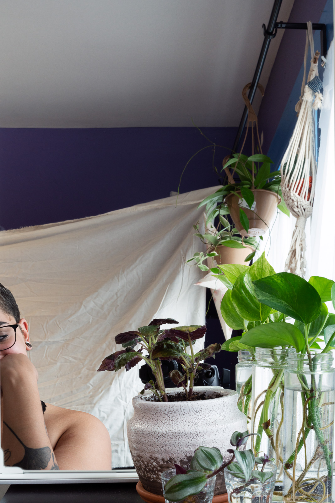
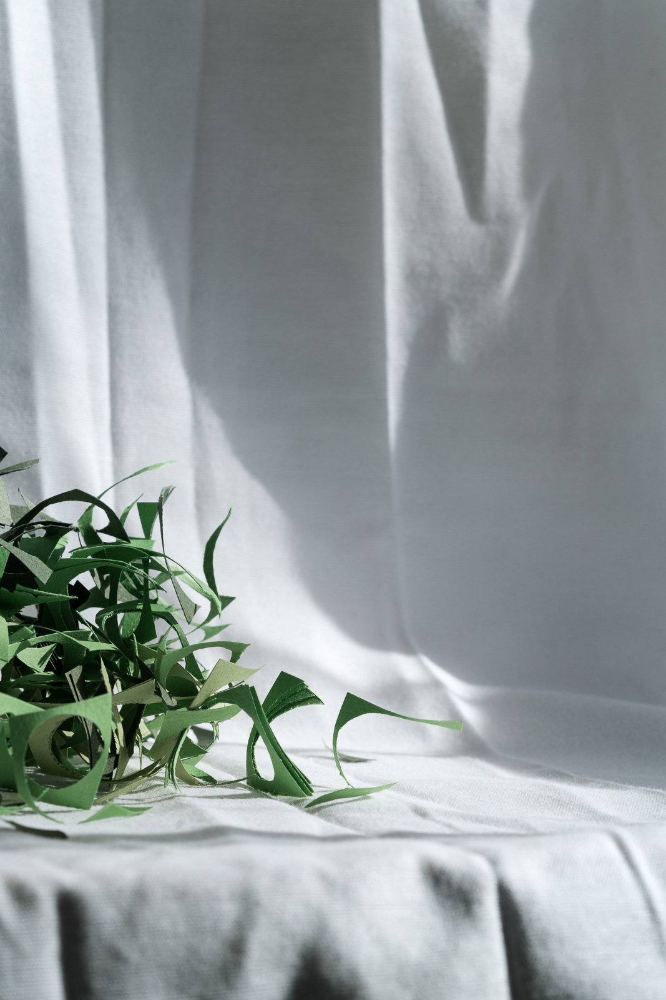
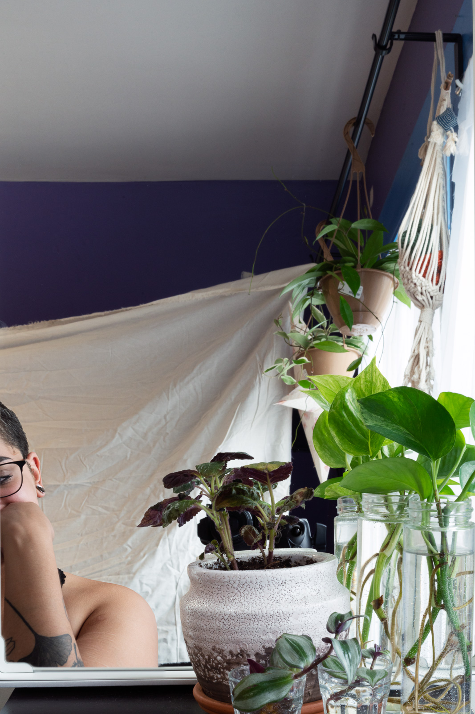
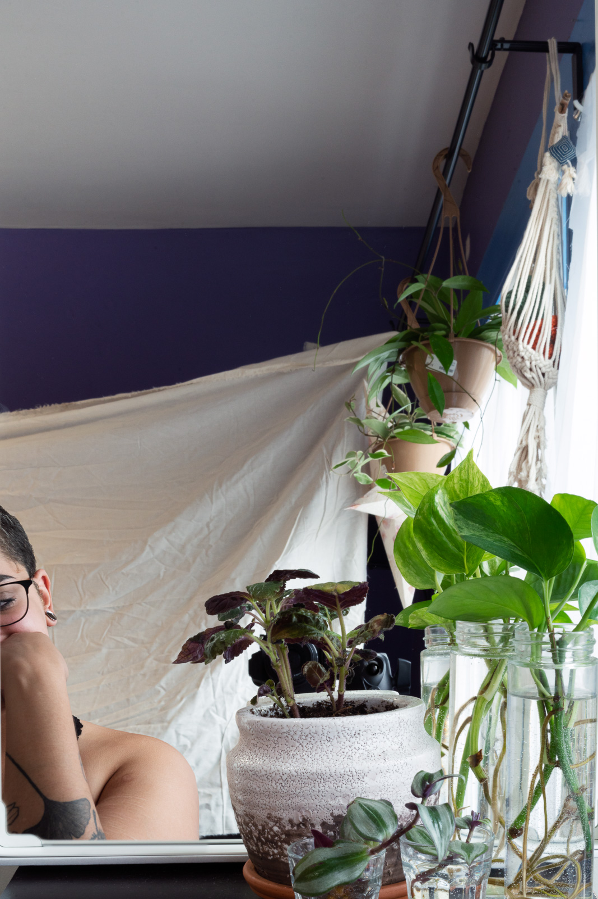
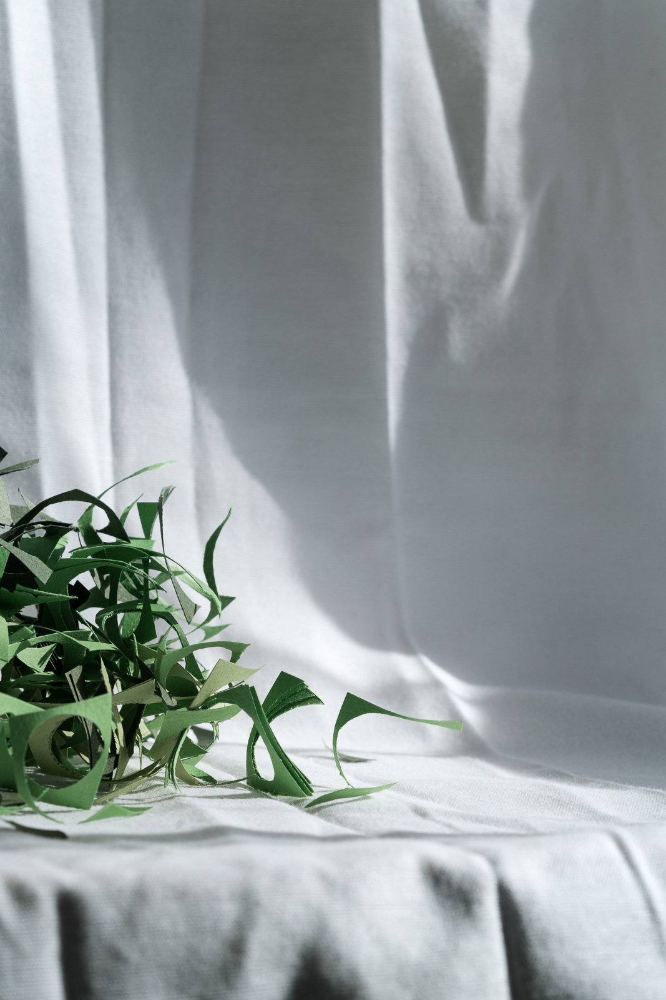
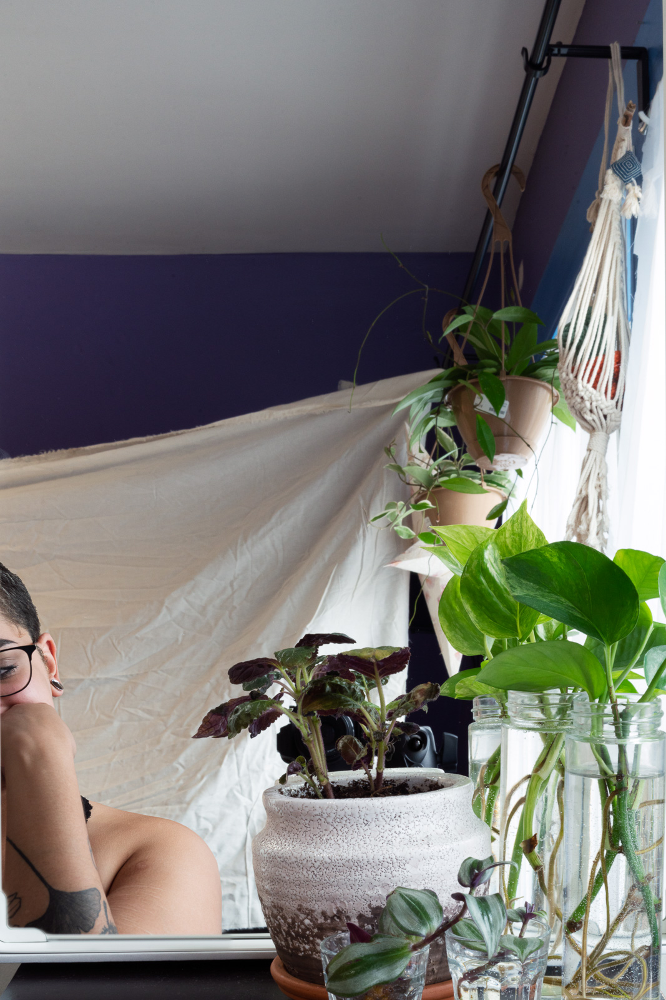

 
biography
Jyoti Liggin (she/her/hers) is a photographer, crafter, and baker from Oakland, CA. Her current body of work, Even the Delicate Survive, utilizes still lives, nature, and self portraiture to reference family history, mental health, and politics.
interview
Jyoti Liggin in conversation with Abigail Howe
AH: Where are you from? What led you to photography?
JL: I was born and raised in Oakland, California. Since I was little I have always loved arts and crafts. In 8th grade they had a darkroom at my school. I decided to take the class and loved it. I didn’t really pay attention to specific details in making images like lighting or angles. I just had fun and explored what I could take pictures of. After that I kind of forgot about photography because I had no opportunity to access a dark room. I decided to go to a college in Vermont first and ended up taking mostly photo classes. I dropped out and found MassArt. Then I decided to pursue my passion and major in photo.
AH: Who are your biggest inspirations?
JL: I couldn’t really pick any one thing that truly inspires me but the conversation that artists have about their work is pretty inspiring just hearing how passionate they are. I also read Sally Mann's book and seeing her perspective on photography was really intriguing. Whenever I’m working on my art I listen to sad and soothing music to keep me focused and thinking.
AH: What do you mainly focus on in your work? How has it changed?
JL: I've always talked about family, mental health, and lately I have been exploring self portraiture. I never have been into taking portraits of people because it feels awkward but I was assigned a project that focuses on portraiture and ever since I have been working hard on improving that.
AH: What’s your favorite photo that you’ve taken and why?
JL: I don't think I have a favorite photo but at the end of each semester I choose a couple photos to set as backgrounds on my phone or computer. It helps remind me of my best moments or a jumping off point to retake photos from previous projects.
AH: Do you have any other hobbies that interest you or influence your photography?
JL:I love most arts and crafts, cooking, making jewelry or really anything that keeps you busy with your hands. It is definitely an outlet for me to clear my mind and relieve stress.
AH: If you could collaborate with any other artist, who would it be and why?
JL: No one really comes to mind but I would like to collaborate with an editorial photographer. Since I come from a fine art background and mostly focus on self portraiture, I would like to see another side to creating photos and be able to bounce off ideas from different perspectives.
AH: Do you have any ideas for where you would like to be working after graduation?
JL: I don’t really have any plans yet. I will just follow wherever the money takes me. At the moment, I don’t have any specific ties anywhere so I’m hoping I can experience new opportunities.
AH: What would you like to be known for?
JL: I just want to be creative and happy. I want my art to bring joy to people.